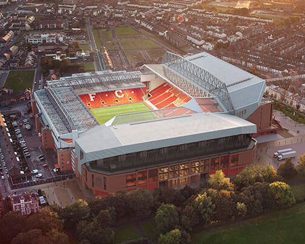

Енфілд — це не просто футбольний стадіон, а культове місце в історії англійського футболу. Розташований у північній частині Ліверпуля, він відомий своїм унікальним духом, близькістю трибун до поля та емоційною підтримкою, яку відчуває кожен гравець. Особливу славу має трибуна The Kop, яка часто перетворюється на справжню стіну звуку під час матчів. Енфілд — це місце, де футбол стає особистою історією для кожного, хто тут побував.